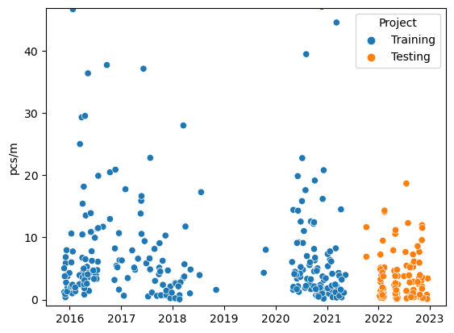
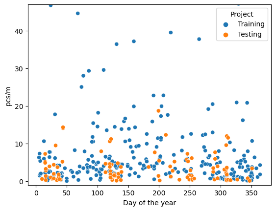
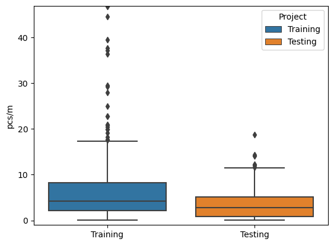
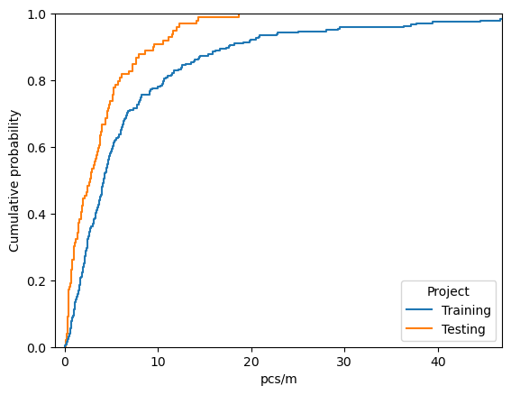
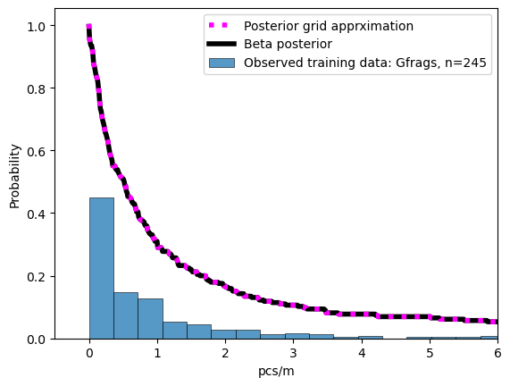
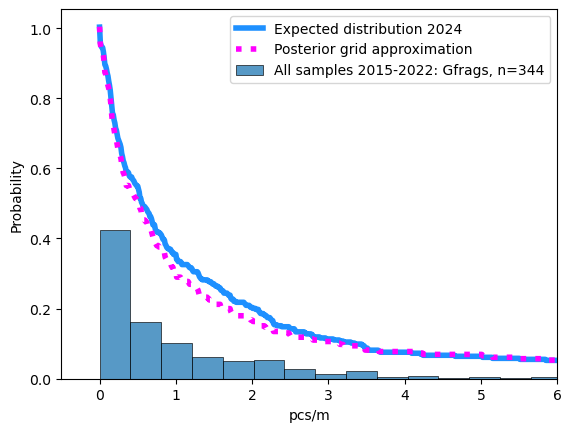
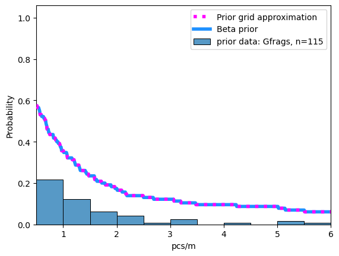

2. Estimating values#
__This is in draft. The methods are correct but the narrative, descriptions and references are being defined. __
The data gathered by the SWE team in 2020 was included in the federal report on shoreline litter density. Since the puplication of IQAASL in December 2021 there has been addtional data collection events on Lac Léman:
SWE team
Association for the Sauvegarde du Léman ASL completed 100 beach litter surveys in 2022
Six year sampling period
The timing of these samples, seven years after the first samples were recorded, could be interpreted as the begining of a new six year sampling period that started in January 2022. The Joint Research Center (JRC) at the EU suggest a six year sampling period with preferably ~ 40 surveys in that time, for each beach that is being monitored. If these conditions are met a baseline value can be established for the location in question. The baseline value, using this method is the median value of the surveys for the time period.
There are over 250 samples from 38 different locations on the lake in the initial six year period. There are no locations that have 40 surveys, therefore the method described previously would not be appropriate for any single location, but it is more than enough for the lake. Recall that we previously discussed the following:
difference between sampling groups
correlation between land-use and survey results
2.1. Research questions#
For the lake and Saint Sulpice:
Given the data from 2022, Is there an increase, decrease or no change in the expected survey results given the consolidated results from 2015 - 2021?
Given the median value for the objects of interest in 2021, what is the chance that a survey in 2022 will exceed this value?
How do the results from 2022 change the expected survey results going forward?
2.2. Practical applications#
Investments have been made to either prevent or remove litter from the public space. The investments are made with the intention of reducing litter in the environment. The answers to the research questions should help evaluate the return on investment (ROI) from previous projects and provide insights for projects going forward.
Did the investment result in a net decline in litter?
What objects were particularly effected?
How does the municpality compare to the rest of the lake?
Where are areas that are in need of the most investment?
2.3. Constraints#
The assessment method must produce information that directly answers the research question and can be put to practical application immediatley. The data produced should reduce the effort required to produce more specific models.
There must be a method to check results integrated into the process.
There must be another method that given the same data produces approximately the same results
The basic calculation should be as simple as possible.
By this we mean the definition of the basic calculation should result from a text-book or similar.
The prefered level is Maturité Federal or level one calculus
The basic calculation should be executable on a spread sheet
The method must be scalable
There should be a path to backend server operations
Output formatting should take ML operations into consideration
Discarding or disregarding data is highly discouraged.
2.4. Definitions#
threshold: The pieces of trash per meter of interest. A float value between 0 and 9.99. This represents between 0 and 999 pieces of trash for every 100 meters. Survey values of individual objects rarely exceeded this range.
object-code: Connects the survey data to information about the category of the object counted. This contains information like material type or intended use. Groups of object-codes can be used to define sources or orgins.
frequency: The frequency of exceeding a threshold is the number of times that a threshold was exceeded (k) divided by the number of samples taken (n) or k/n.
bounding-hex: A hexagon inscribed in a circle of r=1500 m with the survey location at the center
dry-land: The portion of a bounding hex that is not covered by water.
land-cover: The topographical features within a bounding hex that are common to most survey locations. Land-cover features can occupy op to 100% of available dry land. A bounding hex contains at least one land-cover feature.
land-use: The topographical features within a bounding hex that are superimposed over the land cover. Land-use features occupy between 0 - 10% of the available dry-land. A bounding hex may or may not contain a land-use feature.
event: The action of picking up a certain number of pieces of trash, indentifying them and counting them
probability: The conditional probability \(\theta\) that the number of events will exceed a threshold for a given object-code under the defined conditions of the bounding-hex
2.5. Assumptions#
Locations that have similar environmental conditions will yield similar survey results
There is an exchange of material (trash) between the beach and body of water
Following from two, the material recovered at the beach is a result of the assumed exchange
The type of activities adjacent to the survey location are an indicator of the trash that will be found there
Following from four and three, the local environmental conditions are an indicator of the local contribution to the mix of objects at the beach
Surveys are not 100% accurate
Some objects will be misidentified
Not all objects will be found
There will be inaccuracies in object counts or data entry
Following one through 6: the survey results are a reasonable estimate of the minimum number of objects that were present at the time the survey was completed
2.6. Test data, training data and objects of interest#
Training data: All the survey records on or before May 31, 2021
Test data: All the survey records after after May 31, 2021
objects of interest: The object(s) for which further information is requested. Identified by the object-code.
The test and training data is the set of all data collected in Switzerland using the protocol defined in the guide (Guidance on Monitoring Marine Litter in European Seas). More specifically: the test and training data are the results of object (trash) counts from individual survey locations over a delimitted length or surface area that is bordered on one side by a lake. The guide suggests a standard length of 100 m of shoreline, this was encouraged but not considered a criteria for exclusion. The minimum recorded survey length of the training data is 5 m, in the test data it is 18 m. The width is measured from the water line to the high-water mark or the physical limits of the beach itself. For the purposes of this study the only minimum length or width for a survey to be valid is that which is imposed by the data itself.
2.6.1. The training data#
The training data was collected by a variety of organizations over a six year period. In the first sampling campaign (MCBP: 2015-2016) the data from Lake Geneva is primarily from the south part of the lake and collected by two people. Residents of the area would know the region as the Haut Lac with most of the samples coming from the Riviera (agglomermation of Vevey, La Tour-de-Peilz and Montreux). In the second sampling campaign (SLR: 2017-2018) the samples were collected by volunteers from the WWF (WWF). The range extended from the Haut Lac to Gland, including survey locations in Lausanne.
The last survey campaign (IQAASL: 2020 - 2021) collected samples from each major region of the lake monthly at fixed locations, other locations were added spontaneously. When the results of SLR were compared to IQAASL a decrease in the number of objects associated with food and tobacco use was considered probable. However, it was unclear if that decline was due to the pandemic restrictions of 2020, Conclusion SLR v/s IQAASL.
2.6.2. The test data#
The test data is a combination of the data collected by the ASL and the SWE team. Plastock is a project run by the ASL between January and December 2022. They conducted 95 beach liter surveys, from 25 different locations (plastock). The data was analyzed in partnership with the project manager from the ASL to determine suitability for this study. The protocol for plastock was based off of the national survey protocol (IQAASL), the collection and identification was completed by volunteers.
The survey dimensions in 2022 (test data) were on average longer 69 m v/s 48 m and wider 430 m² v/s 209 m² than the training data. There are a total of 245 samples in the training data, this is all the data collected in the first six year sampling period. There are 99 samples in the test data, 95 samples from the ASL and 4 samples from SWE. The test and training data are described by seven columns: loc_date (location and date), location, date, day of year (doy), project (testing or training), code (object code), pcs/m (pieces per meter).
2.6.3. The objects of interest#
From the 2021 report there are 230 object-codes that can be attributed to each one of the 384 surveys. Some objects were found and counted only once, such as paint brushes (G166) others were found in 87% of all samples, cigarette ends (G27). The 15 most abundant objects from Lake Geneva indentified in IQAASL account for 75% of all the objects counted that year Lake Geneva IQAASL, table one. There are some exceptions that must be eliminated, and explained:
Nurdles or injection molding pellets were not counted prior to 2020
Plastock was focussed on plastic objects
The codes of interest are selected from the 15 most abundant objects from the federal report of 2021 AND specific objects that were counted less often but are relativeley easy to identify. Furthermore, we only consider the objects that were also identified in the training data.
A surveyor is likely to encounter common objects in the various states of fragmentation or decomposition. Objects that are easy to identify or to describe have a better chance a being placed under the correct object code. For example a cigarette end is immediately recognizable. Fragmented or otherwise degraded objests are challenging, determining wether or not a plastic bottle cap comes from a beverage or a chemical container can be difficult when all the labeling is removed or eroded. From the original data the following object-codes were aggregated into groups:
Gfoam: Fragmented expanded polystyrene, object-codes: G81, G82, G83
Gfrags: Fragmented plastics, object-codes: G78, G79, G80, G75, G76, G77
Gcaps: Plastic bottle lids and lid rings, object-codes: G21, G23, G24
Note that aggregating object codes into groups is a common strategy. When evaluating litter densities in the marine environment Single Use Plastics (SUP’s) is a common group that contains the objects like plastic bottles or disposable food containers another common group is fishing gear [Eu thresholds](file:///home/roger/Downloads/coastline_litter_threshold_value_report_14_9_2020_final.pdf). There are 16 objects of interest for this initial study (including the three aggregated groups). These objects represent different use-cases and sources.
Personal hygiene, spatial source: diffuse, toilets, water treatment facilities
G95: cotton swabs
G100: Plastic medical containers
Personal consumption, spatial source: local to survey location, abandoned within 1 500 m of the survey
G30: Snack wrappers
Gcaps: drink bottles, caps and lid rings
G10: To go containers
G25: Tobacco related, not cigartetts
G27: cigarette ends
G35: Straws and stirrers
G31: Lollypop sticks
G32: Toys, party favors
G33: Lids for to go drinks
Industrial/professional, spatial source: diffuse, transported to survey location
G67: Plastic sheeting
G89: Construction plastics
Gfoam: Fragmented expanded polystyrene
Unknown, spatial source: diffuse, transported to survey location
Gfrags: Fragmented plastics
Recreation/sports, spatial source: diffuse, transported to survey location
G70: Shotgun shells
| description | material | |
|---|---|---|
| Gfrags | Fragmented plastics | Plastic |
| G30 | Food wrappers; candy, snacks | Plastic |
| G27 | Cigarette filters | Plastic |
| Gfoam | Expanded polystyrene | Plastic |
| G95 | Cotton bud/swab sticks | Plastic |
| Gcaps | Plastic bottle lids | Plastic |
| G67 | Industrial sheeting | Plastic |
| G35 | Straws and stirrers | Plastic |
| G89 | Plastic construction waste | Plastic |
| G31 | Lollypop sticks | Plastic |
| G32 | Toys and party favors | Plastic |
| G100 | Medical; containers/tubes/ packaging | Plastic |
| G33 | Cups, lids, single use foamed and hard plastic | Plastic |
| G25 | Tobacco; plastic packaging, containers | Plastic |
| G70 | Shotgun cartridges | Plastic |
| G10 | Food containers single use foamed or plastic | Plastic |
Fig. 2.1 #
figure 2.1: The objects of interest from the end of the last sampling period, Lake Genea 2020 - 2021.
2.6.4. Summary test and training data#
The training and test data are a combination of field observations from different groups following a protocol without any stated regional or municipal goal by the responsible public administrations. Another way to look at this collection of observations is that each group collected the data for reasons that were specific to that group, the protocol provided a framework for ensuring consistency and a pathway to interpreting the results. However, this does not mean that each group interpreted the protocol in the same manner, nor does it mean that all objects collected were counted. By limiting analysis to specific object-codes, those that appear most frequently or those that are easily identified, uncertainty is reduced by leveraging frequency of occurence and domain experience.
 |
 |
 |
 |
| n samples | quantity | median pcs/m | 94% range | |
|---|---|---|---|---|
| Testing | 99 | 29746 | 2.760000 | [ 0.2 0.81 2.76 5.15 12.41] |
| Training | 246 | 65628 | 4.180000 | [ 0.41 2.1 4.18 8.21 37.51] |
2.7. Methods#
The research questions and practical applications are inquiring about expected results at the municipal level. There are records for 23 municipalities on Lake Geneva, some only have one sample in the entire sampling period. The negative binomial distribution was used to model expected survey results at the river bassin and national level Estimating baselines IQAASL. This simple model produces reasonable estimates of the median expectd value of a survey total. However, the number of samples is \(\gt\) 100 for each river basin and we assume that the sampling conditions are identical.
There are no municipalities that have 100 samples and the differences of local sampling conditions on survey results was first demonstrated using Spearmans \(\rho\) in the federal report by comparing interpreted topographic data from survey locations to the survey results. This work was continued for different distance parameters in Near or far. Furthermore, there is nothing to suggest that the sample rate will increase in the near to midterm. If we use the past seven years as an indicator, then we expect to have an additional 250 - 350 samples in 2027. This is a considerable number but we can be sure that there will be compromises that will result in some municipalities being surveyed more than others and some may well be omitted.
Condtional probability and Bayes theorem makes it possible to measure the magnitude of an unknown parameter as long as the conditions can be quantified. There is no assumption about the underlying relationships between variables except that a realtionship exists. The relationship is defined in the notation: the probability of a given b or \(p(a|b)\). (Statistical Machine Learning Bayes’ theorem) (conditional proabability). For this study we are using Bayes theorem in its simplest form to answer the stated research questions. A grid approximation is constructed under different conditions (priors) for each code. The limits of the grid are defined as \(0 \le x \le 9.99\) and \(0.01 \le y \le 0.99\). This accounts for 99% of the survey results. The x scale corresponds to pieces per meter, multiplying * 100 gives an integer representation of the expected result. Grid approximations are simple to implement and may be appropriate given the amount of available data.
We use conditional probability because the survey results are subject to many variables. Some of the variation can be attributed to the sampling process such as correct identification of the objects or accuracy of dimensional data. Another source of variance is differences between survey locations such as detectability of the objects or the topographical differences. This problem is not unique in the natural sciences, conservationists and wildlife biologists estimate populations and trends under similar conditions, over the years these estimations have become more accurate (summarizing bird counts, estimating age of survival, estimating tick abundance). The magnitude of the exchange between the water source and the beach is yet another variable that is for the most part unknown, except that which can be interpreted from the survey data (Identifying Marine Sources of Beached Plastics). In summary, there are many sources of variance, only one of which is the sampling error.
2.7.1. Conditional probability#
Conditional probability is the measure of the probability of an event occuring given that another event has occurred (Wikepedia). For this study the event under consideration is whether or not a threshold was exceeded. The probability of that event is noted \(p(\theta)\), the probability of \(\theta\) given a condition or set of condtions is \(p(\theta | condition(s))\).
The general case
Using the formal definition of conditional probability let a = \(\theta\) and b = event data, the probability of an event given a condtion is:
This is Bayes theorem, it tells us that the probability of event a is conditioned on event b. There is a standard nomenclature for the different values in Bayes theorem.
If the sample space can be defined by \(a\) and \(a^{\prime}\) then the total probability is the sum of the (likelihood * the prior) and (the complement to the prior*the complement to the likelihood). This means that we consider only two possible results: \(y \ge x\) or \(y \lt x\), where x is a threshold value and y is a survey result in pieces per meter (pcs/m). Bayes theorem is used extensively in machine learning. Many processes have been optimized for data pipelines (Scikit Naive Bayes) and solving Generalized Linear Models (Bayesian regression models using Stan). Fully developed, the proposed model is a Bayesian Neural Network (Deep Learning).
2.7.2. The priors#
The \(priors\) refers to the assumptions or expected results before new evidence is taken into account (wikepedia). The \(priors\) used in this study are separated in two classess, informed or uninformed. Recall that the \(prior\) is the first term in the numerator of (5).
uninformed: every value of x described by the set \(0 \le x \le 9.99\) an equal chance of occuring: 0.5 or 1/2 or even 50%
informed: the probability of x described by a subset of the data that was observed at a date on or equal to the maximum date of the observed data being evaluated.
The subset of data is related to the observed data either geographically or by a measurable attribute
example of geographic relationship: same lake or river basin
example of measurable attribute: similar land use configuration
In either case both are float values in the range of 0.01 and 0.99. The informed prior establishes a second method (the measurable attribute) to group data and use it to calculate expected values. The set of available data is small and choices or statements about the value of the \(prior\) have considerable weight in reference to the posterior distribution. Having multiple possible values for the \(prior\) is consistent with Bayesian analysis and is encouraged (Gelman prior distribution).
2.7.2.1. The informed prior#
The informed prior uses data from other sources as well as the survey results from the region in question. The informed priors in this study are assembled by considering the survey results from locations that have similar environmental conditions. The connection between measurable land-use attributes and survey results was illustrated in the swiss national survey (IQAASL) and explored in depth, including early versions of the proposed model in Near or far. The source of the land-use data is swissTLMRegio, the details of extracting the data and defining the boundary conditions can be found here New map data.
Environmental conditions: are the measurable land-use attributes defined by or derived from an accurate topographic map.
2.7.2.2. The measured land-use attributes#
Note: There are slight changes in the way the land-use variables are handled and described with respect to Near or far. Notably the infrastruture and recreation variables are scaled separately from the land-cover variables.
land-cover
These measured land-use attributes are the labeled polygons from the map layer Landcover defined here (swissTLMRegio product information), they are extracted using vector overlay techniques in QGIS (QGIS). The overlay is a hexagon-grid, each hex is 3000m, circumcscribed by a circle r=1500m. The survey location is located at the center of the hex. The magnitude of the land-use variable is the portion of the total dry surface area for any particular land-use attribute. Areas of the hex that are not defined with a land-use attribute in this map layer are labeled undefined and processed like any other land-use attribute. The land-cover variables of interest are:
Buildings: built up, urbanized
Woods: not a park, harvesting of trees may be active
Vineyards: does not include any other type of agriculture
Orchards: not vineyards
Undefined: areas of the map with no predefined label
Land-use
Land-use variables are the labled polygons from the Freizeitareal and Nutzungsareal map layers, defined in (swissTLMRegio product information). Both layers represent areas used for specific activities. Freizeitareal identifies areas used for recreational purposes and Nutzungsareal represents areas such as hospitals, cemeteries, historical sites or incineration plants. As a ratio of the available dry-land in a hex, these features are relatively small (less than 10%) of the total dry-land. For identified features within a bounding hex the magnitude in meters² of these variables is scaled between 0 and 1, thus the scaled value represents the size of the feature in relation to all other measured values for that feature from all other hexagons.
Recreation: parks, sports fields, attractions
Infrastructure: Schools, Hospitals, cemeteries, powerplants
Streets and roads
Streets and roads are the labled polylines from the TLM Strasse map layer defined in (swissTLMRegio product information). All polyines from the map layer within a bounding hex are merged (disolved in QGIS commands) and the combined length of the polylines, in meters, is the magnitude of the variable for the bounding hex.
2.7.3. Additional references for Empirical Bayes and priors#
Bayesian Filtering and Smoothing Simo S¨arkk¨a (2013). Bayesian Filtering and, Smoothing. Cambridge University Press.
priors
Empirical Bayesians estimate the prior distribution from the data
Difference between frequentist an bayes
Frequentist |
Bayesian |
|
|---|---|---|
Probability is: |
limiting relative frequency |
degree of belief |
Parameter \(\theta\) is a: |
fixed constant |
random variable |
Probability statements are about: |
procedures |
parameters |
Frequency guarantees? |
yes |
no |
Doing Byesian Data Analysis Kruske, John. Doing Bayesian Data Analysis, 2nd Edition. 2015. http://dx.doi.org/10.1016/B978-0-12-405888-0.00002-7
What is Bayes
Bayesian data analysis has two foundational ideas. The first idea is that Bayesian inference is reallocation of credibility across possibilities. The second foundational idea is that the possibilities, over which we allocate credibility, are parameter values in meaningful mathematical models.
2.7.4. Example informed and uninformed priors#
It is unclear to what degree the posterior distribution changes when using the informed prior and the uninformed prior. That is: we do not know how the answers to the research questions change when the prior data changes. The prior data is from the existing data set, therefore the prior data can be selected by a measured-land-use-attribute or a collection of land-use attributes. After the amount of land occupied by water, the next most important land-cover attributes are buildings and undefined. Note that these two attributes are negatively corollated, suggesting that a selection for one is an exclusion of the other.
Example uninformed prior: Lake Geneva, fragmented plastics (Gfrags)
 |
|
 |
words |

Example informed prior: Saint Sulpice, fragmented plastics (Gfrags)
 |
|
describe |
describe |
2.8. Implementation and results#
For this initial study we are directly calculating the probability of an event given the events described in the survey results. The result is a point estimate of the probability of that event, given the data and the prior probability of that event.
2.8.1. Lake Geneva#
Given the data from 2022, Is there an increase, decrease or no change in the expected survey results given the consolidated results from 2015 - 2021?
Given the median value for the objects of interest in 2021, what is the chance that a survey in 2022 will exceed this value?
How do the results from 2022 change the expected survey results going forward?
2.8.2. Saint Sulpice#
Given the data from 2022, Is there an increase, decrease or no change in the expected survey results given the consolidated results from 2015 - 2021?
Given the median value for the objects of interest in 2021, what is the chance that a survey in 2022 will exceed this value?
How do the results from 2022 change the expected survey results going forward?
2.8.3. Inference tables#
Inference tables are Grid approximations made from a series of point estimates calculated using Bayes theorem. Instead of calculating the probability of every event, we calculate points at fixed intervals between a minimum and maximum range of probable values. The minimum is zero, for this study we set the maximum to 1000 p/100 m or 10 p/m. The maximum can be defined by the data, taking the 99th percentile for example. This method is 100% inspired by Alan Downeys example using python : Think Bayes 2 and using R : Approximating the posterior in Bayes Rules! An Introduction to Applied Bayesian Modeling. Grid approximations leverage basic array functionality and make it easy to implement different methods for handling the priors. Recal that there are two hypothesis for each event: h = the threshhold was exceeded, h1 = the threshhold was not exceeded. (Bayes’ theorem) (conditional proabability).
2.8.3.1. The grid#
There is a grid for each code. The grid contains the density in pcs/m, the likelihood of the event, the prior probability of the event and the calculations required to determine the posterior probability of the event. There are 1000 rows in each grid or one row for every .01 in the range of 0.00 to 9.99.
2.9. Discussion#
2.10. Conclusions#
2.10.1. Next steps#
2.10.2. Participating organizations#
2.10.3. Financial disclosure#
This script updated 12/08/2023 in Biel, CH
❤️ what you do everyday
analyst at hammerdirt
Git repo: https://github.com/hammerdirt-analyst/patelmanuscript.git
Git branch: newsummary
seaborn : 0.12.2
pandas : 2.0.2
matplotlib: 3.7.1
numpy : 1.24.3
scipy : 1.10.1